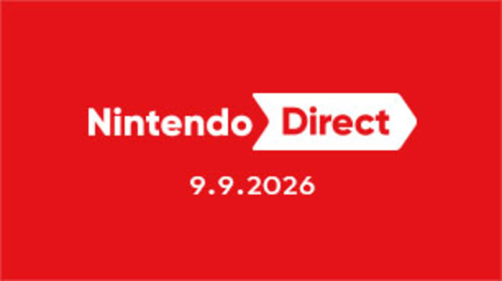

01↗Nintendo Direct coloca Monster Hunter Wilds, Metroid Ravenous e o novo Kirby no centro do Switch 2.
A apresentação também trouxe Final Fantasy VII, Professor Layton, Resident Evil, Persona e uma atualização gratuita para Mario Kart World.